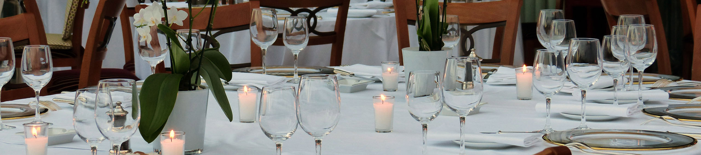
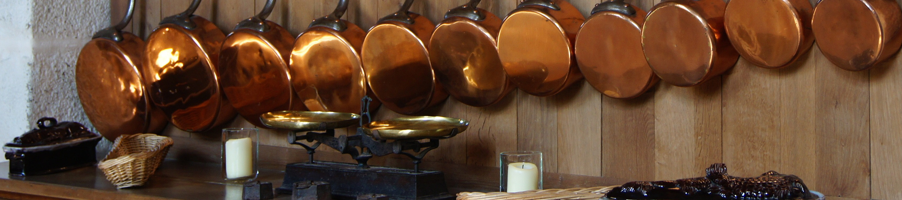

Solängs Fårgård

est. 1990
Solängs Fårgård har som målsättning att producera skinn, ull och lammkött på ett så naturligt sätt som möjligt. Gården är hem till tre generationer av familjen Ängquist som också driver den. Vi gör vårt bästa för att barn, vuxna, natur och alla djur ska trivas tillsammans.

cert. 2010
Gården är KRAV certifierad sedan 2010 och vi tillämpa ekologiskt lantbruk. 2 mil norr om Umeå lever vi i en vacker omgivning av hagmark, åkrar och stora skogar.


